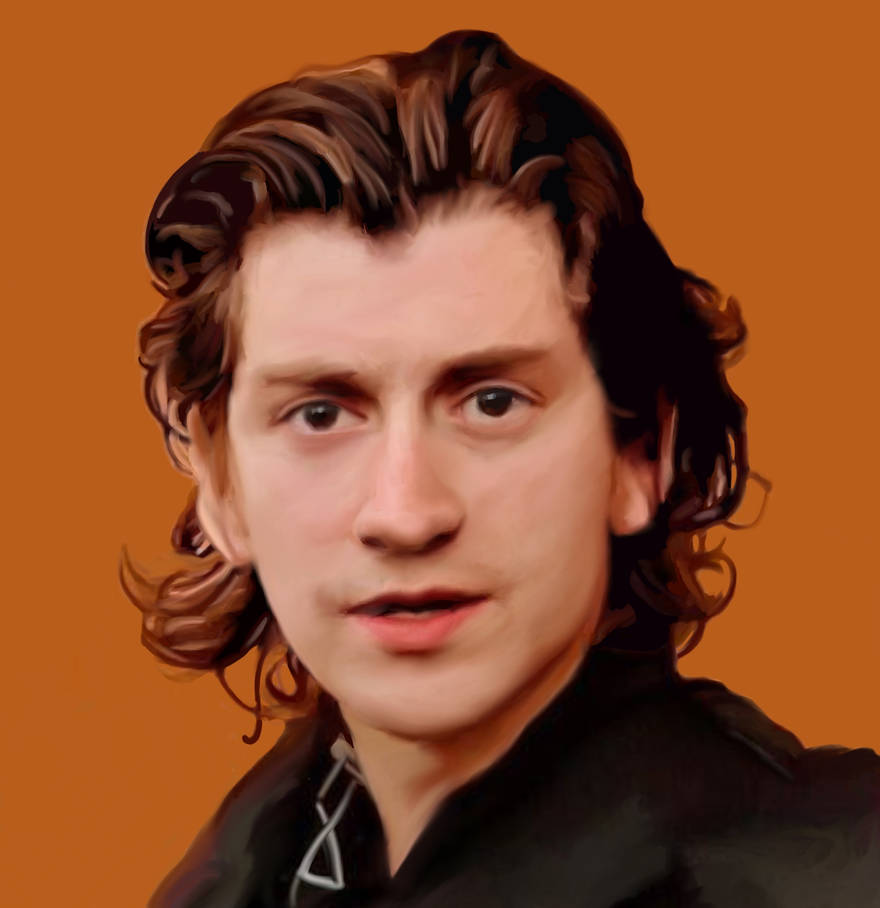
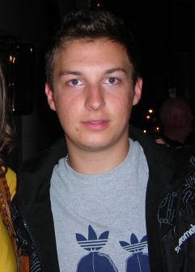
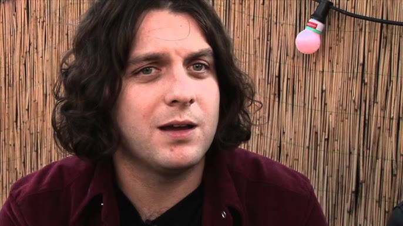

Born: January 6, 1986
Алекс Тернер є фронтменом і автором пісень рок-гурту Arctic Monkeys. Відомий своїм ліризмом, який варіюється від реалізму кухонної мийки до сюрреалістичної гри слів.

Born: May 7, 1986
Меттью Хелдерс — барабанщик, вокаліст і автор пісень для Arctic Monkeys. Він є одним із засновників гурту і записав з ними сім студійних альбомів.
Born: July 8, 1985
Джеймі Кук є ритм-гітаристом і головним гітаристом Arctic Monkeys, а також одним із засновників. З гуртом записав шість студійних альбомів.

Born: July 5, 1985
Ніколас О'Меллі - бас-гітарист і бек-вокаліст Arctic Monkeys. Він приєднався до гурту як заміна попереднього басиста Енді Ніколсона.